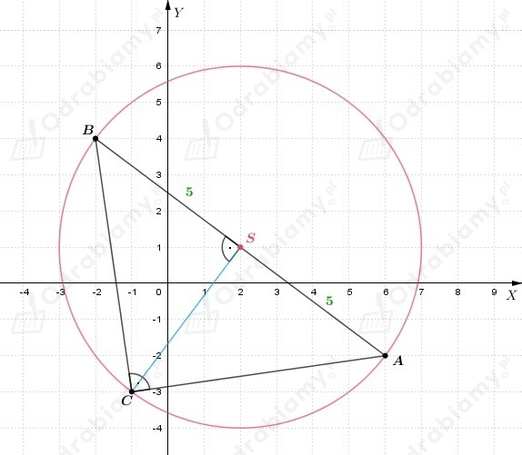

Wiemy, że
Wyznaczamy środek odcinka AB i CD
Wyznaczamy odległość pomiędzy środkami odcinków AB i CD.
Zapisujemy równanie prostej w postaci ogólnej
Wyznaczamy odległość punktu P od prostej
Wiemy, że punkt S(4, 1) jest środkiem okręgu.
Jeżeli okrąg jest styczny do prostej y=-2, to promień okręgu jest
równy odległości środka okręgu od tego prostej. Zatem
Równanie okręgu
Zauważamy, że środek okręgu K, to punkt S(4, -3), natomiast promień tego okręgu
ma wartość r=2. Wobec tego okrąg K', który jest symetryczny do okręgu K względem
osi OX ma środek w punkcie S'(4, 3) i promień takiej samej długości jak promień okręgu K.
Zapisujemy równanie okręgu K'
Wyznaczamy odległość między środkiem okręgu K i środkiem okręgu K'
Wiemy, że punkty
są wierzchołkami czworokąta.
Czworokąt jest rombem, gdy wszystkie boki ma tej samej długości i ma dwie pary boków równoległych.
Sprawdzamy, czy wszystkie boki czworokąta są tej samej długości.
Widzimy, że
zatem wszystkie boki czworokąta są tej samej długości.
Sprawdzamy, czy czworokąt ma dwie pary boków równoległych.
Wyznaczamy współczynniki kierunkowe prostych zawierających boki czworokąta.
Zauważamy, że
Zatem czworokąt ma dwie pary boków równoległych.
Wnioskujemy, że czworokąt ABCD jest rombem.
Wyznaczamy wysokość rombu jako odległość punktu C od prostej AB.
Podstawiamy współrzędne punktu A i otrzymujemy
zapisujemy równanie prostej w postaci ogólnej
Obliczmy wysokość rombu
Obliczamy pole rombu
Wiemy, że punkty
są wierzchołkami równoległoboku ABCD.
Przekątne równoległoboku przecinają się w punkcie S(0, 3).
Wyznaczamy współrzędne punktu C(xC, yC)
Zatem C(-4, 4).
Wyznaczamy współrzędne punktu D(xD, yD)
Zatem D(-1, 0).
Symetralna boku CD jest do niego prostopadła i przechodzi przez jego środek.
Wyznaczamy współrzędne środka odcinka CD.
Wyznaczamy współczynnik kierunkowy prostej CD.
Zatem współczynnik kierunkowy symetralnej odcinka CD wynosi 3/4.
Podstawiamy współrzędne środka odcinka CD i dostajemy
Zatem równanie symetralnej odcinka CD możemy zapisać w postaci
Zauważamy, że
Aby okręgi były styczne zewnętrznie, to musi być spełnione równanie
Zatem obliczmy odległość między środkami okręgów.
Wyznaczamy sumę promieni okręgów.
Wnioskujemy, że okręg są styczne zewnętrznie, ponieważ
co należało uzasadnić.
W okrąg
został wpisany trójkąt prostokątny równoramienny ABC.
Kąt prosty tego trójkąta znajduje się przy wierzchołku C(-1, -3).
Przyjmijmy oznaczenia jak na rysunku poniżej

Wiemy, że ∢ACB=90°, zatem |AC|=|CB|. Skoro okrąg jest opisany na trójkącie
prostokątnym, to środek okręgu jest środkiem odcinka AB oraz bok AB jest równy średnicy okręgu.
Możemy zauważyć, że odcinek CS jest wysokością trójkąta ABC, zatem prosta CS jest prostopadła
do prostej AB.
Wyznaczamy równanie prostej AB.
Wiemy, że
Skoro
to dostajemy, że
Wobec tego równanie prostej możemy zapisać jako
Prosta AB przechodzi przez punkt S, więc podstawiamy jego współrzędne do powyższego równania prostej
Wobec tego
Teraz możemy wyznaczyć współrzędne wierzchołków A i B trójkąta ABC
jako punkty wspólne prostej AB i okręgu.
Podstawiamy wartość y z drugiego równania do pierwszego i otrzymujemy
Wracamy do podstawienia i wyznaczamy wartość y.
Wnioskujemy, że
Zauważamy, że środek okręgu K, to punkt S(-3, 1), a jego promień, to
Zatem okrąg K', który jest symetryczny do okręgu K względem początku
układu współrzędnych ma środek w punkcie S'(3, -1), natomiast promień
takiej samej długości jak promień okręgu K.
Zapisujemy równanie okręgu K'
Wyznaczamy równanie prostej przechodzącej przez środki okręgów K i K'.
Wstawiamy do powyższego równania współrzędne punktu S i otrzymujemy
Zatem równanie prostej przechodzącej przez środki okręgów K i K' ma równanie
Wyznaczamy współrzędne punktów przecięcia okręgu K' z prostą y=1.
Podstawiamy y=-1/3 do pierwszego równania i otrzymujemy
Wracamy do podstawienia i wyznaczamy wartość y.
Wnioskujemy, że punkty wspólne okręgu K' i prostej przechodzącej
przez środek okręgu K i K', to punkty